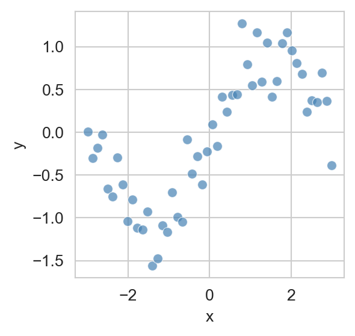
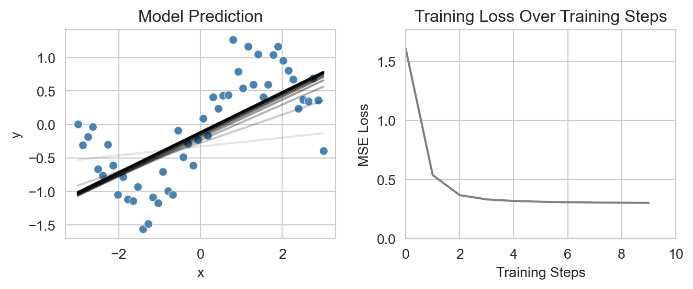
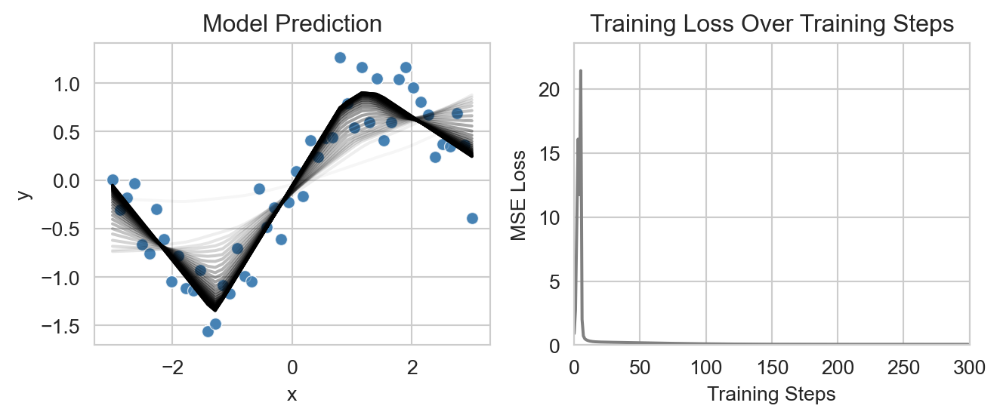
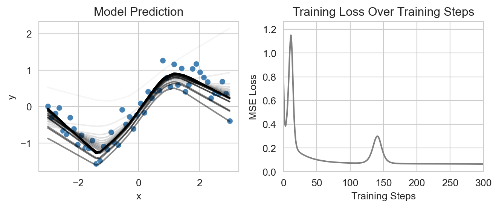
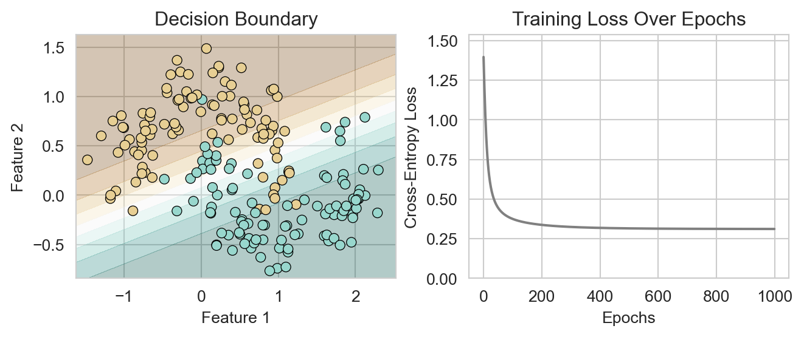

import numpy as np
import pandas as pd
import matplotlib.pyplot as plt
import seaborn as sns
sns.set_style("whitegrid")9 Introducing Neural Networks
Beyond linear models for regression and classification
Open the live notebook in Google Colab or download the live notebook.
Recall…
In our discussion of feature engineering, we saw that one way to allow our linear models to capture nonlinear relationships in data was to create new features, functions which accept input data and return transformations of that input.

We saw that, although fitting a linear regression model to this data directly resulted in poor performance, we could instead fit a polynomial regression model where we defined a feature map \(\phi_d(x) = x^d\) and then fit a linear model of the form
\[ \begin{aligned} \hat{y} &= w_D \phi_D(x) + w_{D-1} \phi_{D-1}(x) + \cdots + w_1 \phi_1(x) + w_0 \\ &= \sum_{d=0}^D w_d \phi_d(x). \end{aligned} \tag{9.1}\]
We then used standard linear regression techniques to estimate the weights \(w_d\).
However, this approach has some major limitations:
- Why should we choose polynomial feature maps, rather than some other function instead?
- How do we know how many to use in order to avoid both underfitting and overfitting?
These two questions are sometimes referred to as the problem of features. There have been several proposed solutions to the problem of features over the history of machine learning. Today we’ll introduce neural networks, which have been the dominant paradigm in many areas of machine learning since roughly 2012.
Learn the Features
The core insight of neural networks is very simple: rather than just trying to find the best weights \(\{w_d\}\) to fit the data, why not try to find the best features \(\{\phi_d\}\) as well? In other words:
Neural networks aim to learn helpful feature maps from data.
The most common way in which neural networks learn features is by composing together simple parameterized functions (often called “layers”) into complex pipelines which may then be optimized.
For example, suppose that we want to learn a total of \(p\) features \(\phi_1(x), \ldots, \phi_p(x)\) from a single input variable \(x\). One way to define these features is to simply set \(\phi_j(x) = x\) for all \(j\). Since no real transformation is applied, this is equivalent to fitting a linear regression model, like before, since
\[ \begin{aligned} \hat{y} &= \sum_{j = 1}^p w_j\phi_j(x) + b \\ &= \sum_{j = 1}^p w_j x + b \\ &= \underbrace{\left(\sum_{j = 1}^p w_j\right)}_w x + b. \end{aligned} \]
We can verify this by implementing it in our new framework for deep learning, PyTorch. In the language of neural networks, the operation of taking \(x\) and transforming it into \(wx + b\) is called a Linear layer. Since the input is just a single number and the output is also a single number, we say that this layer has input dimension 1 and output dimension 1. This means that we need a Linear(1,1) layer to perform the mapping. In standard torch frameworks, we need to save all our layers as instance variables of a class, and then define a forward method which specifies how data flows through the layers. Let’s try this out. First we’ll import our torch libraries and convert our data into torch’s preferred data format, the Tensor.
You can think about a
Tensor as very similar to a numpy array; the key difference is that Tensors support what is called automatic differentiation, a key technology which is behind the scenes when training these modelsimport torch
import torch.nn as nn
import torch.optim as optim
X = df[['x']].values.astype(np.float32)
y = df['y'].values.astype(np.float32).reshape(-1, 1)
X = torch.from_numpy(X)
y = torch.from_numpy(y)Now we’ll implement our linear regression model as a neural network with a single Linear layer.
class LinearRegressionNN(nn.Module):
def __init__(self):
super(LinearRegressionNN, self).__init__()
self.linear = nn.Linear(1, 1) # Input layer to output layer
def forward(self, x):
return self.linear(x)We’ll also implement a standard training loop for regression problems. This loop still uses the mean squared error loss function, and optimizes the model parameters using gradient descent.
def train_regression_model(model, X, y, num_epochs=1000, learning_rate=0.1):
1 loss = nn.MSELoss()
2 optimizer = optim.SGD(model.parameters(), lr=learning_rate)
losses = []
for epoch in range(num_epochs):
3 optimizer.zero_grad()
4 y_hat = model.forward(X)
5 loss_value = loss(y_hat, y)
6 loss_value.backward()
7 optimizer.step()
losses.append(loss_value.item())
return losses- 1
- Define the loss function (mean squared error for regression).
- 2
- Define the optimization algorithm used to adjust the parameters in order to make the loss function small.
- 3
- Reset all information accumulated from the previous backpropagation step.
- 4
- Perform a forward pass through the model to compute predictions.
- 5
- Compute the loss value based on the predictions and true values.
- 6
- Perform an algorithm called backpropagation to determine a good direction in which to adjust the model parameters.
- 7
- Update the model parameters based on the results of backpropagation.
Let’s also define some functions to facilitate plotting the results of our regression model.
def plot_regression(model, X, y, df, ax, **plot_kwargs):
predicted = model(X).detach().numpy()
sns.scatterplot(data=df, x='x', y='y', ax=ax, color = 'steelblue', alpha=0.7)
sns.lineplot(x=df['x'], y=predicted.flatten(), ax=ax, **plot_kwargs)
def plot_regression_model_training(model, X, y, df, num_epochs=10, num_viz=10):
fig, ax = plt.subplots(1, 2, figsize=(7, 3))
loss_all = []
for j in range(num_viz):
plot_regression(model, X, y, df, ax[0], alpha=j/num_viz, color='black')
losses = train_regression_model(model, X, y, num_epochs = num_epochs)
loss_all.extend(losses)
ax[0].set_title('Model Prediction')
ax[1].plot(loss_all, color = "grey")
ax[1].set_title('Training Loss Over Training Steps')
ax[1].set_xlim(0, num_epochs * num_viz)
ax[1].set_ylim(0, max(loss_all)*1.1)
ax[1].set_xlabel('Training Steps')
ax[1].set_ylabel('MSE Loss')
plt.tight_layout()Let’s now finally create and train our linear regression model:
model = LinearRegressionNN()
plot_regression_model_training(model, X, y, df, num_epochs=1, num_viz=10)
As expected, we can see that the model attempts to fit the data with a straight line, which it adjusts over the course of the training process until the training loss begins to plateau.
Nonlinear Features via Neural Networks
Now let’s move past linear regression to what neural networks are really for: nonlinear features. We’re still keeping things simple: we’re going to learn a feature map of the form
\[ \begin{aligned} \phi_i(x) = \sigma(u_ix)\;, \end{aligned} \]
where \(u_i\) is a learned weight corresponding to feature \(i\) and \(\sigma\) is a fixed nonlinear function called an activation function. A common choice for \(f\) is the rectified linear unit (ReLU), defined as
There are lots of reasonable choices of activation function: the primary requirement is simply that the function be nonlinear in some way.
\[ \begin{aligned} \sigma(z) = \max(0, z)\;. \end{aligned} \]
This means that the model we’re going to implement now has the form
\[ \begin{aligned} \hat{y} = \sum_{i = 1}^p w_i \sigma(u_i x)\;. \end{aligned} \]
Now it matters how we set \(p\), the total number of features to learn. As usual, increasing \(p\) increases the flexibility of the model, allowing it to fit more complex relationships in the data, but also increasing the risk of overfitting.
To build this model, we need two Linear layers: one to map the input \(x\) to the \(p\) features \(\phi_i(x)\), and another to map the features to the output \(\hat{y}\). We’ll also need to include the ReLU activation function between these two layers:
It’s very important that the output dimension of one
Linear layer matches the input dimension of the next layer, as illustrated below.num_features = 30
class SimpleNN(nn.Module):
def __init__(self):
super(SimpleNN, self).__init__()
self.layer1 = nn.Linear(1, num_features)
self.layer2 = nn.Linear(num_features, 1)
self.activation = nn.ReLU()
def forward(self, x):
x = self.layer1(x)
x = self.activation(x)
x = self.layer2(x)
return xNow we’re ready to visualize and train our model like before:
model = SimpleNN()
plot_regression_model_training(model, X, y, df, num_epochs=10, num_viz=30)
This model is able to fit the nonlinear trend in the sinusoidal data set much more effectively than the linear regression model from above, which is reflected in the much smaller value of the loss function at the end of training.
Neural Networks for Classification
Neural networks are also widely used for nonlinear classification problems.
To illustrate this, we’ll create a synthetic two-dimensional classification data set using the make_moons function from sklearn. This data set consists of two interleaving half circles, which cannot be separated by a linear decision boundary.
from sklearn.datasets import make_moons
X, y = make_moons(n_samples=200, noise=0.2, random_state=42)
X = torch.from_numpy(X.astype(np.float32))
y = torch.from_numpy(y.astype(np.float32)).reshape(-1, 1)
fig, ax = plt.subplots(figsize=(6, 4))
sns.scatterplot(x=X[:, 0], y=X[:, 1], hue=y.flatten(), palette='BrBG', ax=ax, legend = False, edgecolor='k')
ax.set_title('Synthetic Two-Class "Moons" Data Set')
ax.set(xlabel='Feature 1', ylabel='Feature 2')
Compared to regression, the primary difference for classification problems is that we typically design our network to output a score for each possible class.
class LinearClassificationNN(nn.Module):
def __init__(self, num_classes=2):
super(LinearClassificationNN, self).__init__()
self.linear = nn.Linear(2, num_classes) # Input layer to output layer
def forward(self, x):
return self.linear(x)Here’s how this looks for some example input data:
x_example = torch.tensor([[1.0, 2.0], [3.0, 4.0], [5.0, 6.0]])
model_example = LinearClassificationNN(num_classes=2)
output_example = model_example(x_example)
print(output_example)tensor([[-0.2138, 0.2138],
[-1.0039, -0.2728],
[-1.7940, -0.7594]], grad_fn=<AddmmBackward0>)We often apply the softmax function to each row of outputs in order to convert them into interpretable class probabilities. The softmax is defined as
\[ \begin{aligned} \mathrm{SoftMax}(x_1,\ldots,x_p) = \frac{1}{\sum_{j = 1}^p e^{x_j}}\left(e^{x_1},e^{x_2}, \ldots,e^{x_p}\right)\;. \end{aligned} \]
When applied to any vector of real numbers, the output of the softmax is a vector of nonnegative numbers which sum to one, making it interpretable as a probability distribution over the \(p\) classes.
torch.softmax(output_example, dim=1)tensor([[0.3947, 0.6053],
[0.3250, 0.6750],
[0.2622, 0.7378]], grad_fn=<SoftmaxBackward0>)The loop to train a classification model is very similar to the regression training loop from before. We just need to specify a different loss function, called cross-entropy loss, which is appropriate for classification problems and which accepts multidimensional outputs of the kind we’re using here. Because the cross-entropy loss function in PyTorch expects the target labels to be in a one-hot encoded format, we’ll convert our labels y accordingly before training.
y_one_hot = torch.nn.functional.one_hot(y.flatten().long(), num_classes=2).float()
def train_classification_model(model, X, y, num_epochs=1000, learning_rate=0.1):
1 loss = nn.CrossEntropyLoss()
optimizer = optim.SGD(model.parameters(), lr=learning_rate)
losses = []
for epoch in range(num_epochs):
optimizer.zero_grad()
y_hat = model.forward(X)
loss_value = loss(y_hat, y_one_hot)
loss_value.backward()
optimizer.step()
losses.append(loss_value.item())
return losses- 1
- Cross-entropy loss function for classification.
Here’s an example of training this model and using it to extract predictions. We assume that the class with the highest predicted score is the predicted class for each observation.
model = LinearClassificationNN()
losses = train_classification_model(model, X, y, num_epochs=1000)
y_hat = model.forward(X)
preds = torch.argmax(y_hat, dim=1)
print((preds == y.flatten()).float().mean()) # Classification accuracytensor(0.8350)For data with a small number of dimensions, it can be helpful to visualize the behavior of the model in terms of the decision regions, which are the combinations of feature inputs which the model assigns to each class. The somewhat complicated code below implements this visualization along with a plot of the training loss over epochs.
def plot_classification(model, X, y, ax):
# Create a mesh grid for plotting decision boundary
x_min, x_max = X[:, 0].min()*1.1, X[:, 0].max()*1.1
y_min, y_max = X[:, 1].min()*1.1, X[:, 1].max()*1.1
xx, yy = torch.meshgrid(torch.arange(x_min, x_max, 0.01),
torch.arange(y_min, y_max, 0.01))
grid = torch.cat([xx.reshape(-1, 1), yy.reshape(-1, 1)], dim=1)
with torch.no_grad():
Z = model(grid)
Z = torch.softmax(Z, dim=1)[:, 1].reshape(xx.shape)
ax.contourf(xx, yy, Z, levels=torch.linspace(0, 1, steps=10), alpha=0.3, cmap='BrBG')
sns.scatterplot(x=X[:, 0], y=X[:, 1], hue=y.flatten(), palette='BrBG', ax=ax, legend=False, edgecolor='k')
ax.set(title='Classification Decision Boundary', xlabel='Feature 1', ylabel='Feature 2')
def plot_classification_model_training(model, X, y, num_epochs=1000):
fig, ax = plt.subplots(1, 2, figsize=(7, 3))
losses = train_classification_model(model, X, y, num_epochs=num_epochs)
plot_classification(model, X, y, ax[0])
ax[0].set_title('Decision Boundary')
ax[1].plot(losses, color = "grey")
ax[1].set_title('Training Loss Over Epochs')
ax[1].set(ylim=(0, max(losses)*1.1), xlabel='Epochs', ylabel='Cross-Entropy Loss')
plt.tight_layout()Now we can plot both the loss and the decision regions learned by our linear classification model:
model = LinearClassificationNN()
plot_classification_model_training(model, X, y)/Users/philchodrow/My Drive (pchodrow@middlebury.edu)/teaching/data-science-notes/env/lib/python3.10/site-packages/torch/functional.py:539: UserWarning:
torch.meshgrid: in an upcoming release, it will be required to pass the indexing argument. (Triggered internally at /Users/runner/work/pytorch/pytorch/pytorch/aten/src/ATen/native/TensorShape.cpp:3638.)

Whoops! This doesn’t look like such an interesting classification model. In fact, the use of a single linear layer plus cross-entropy loss is equivalent to fitting a logistic regression model, which we’ve already seen. To develop a more interesting model, let’s add a hidden layer with nonlinear activation functions, just like we did for regression above.
class SimpleClassificationNN(nn.Module):
def __init__(self, num_classes=2, num_features=10):
super(SimpleClassificationNN, self).__init__()
self.layer1 = nn.Linear(2, num_features)
self.layer2 = nn.Linear(num_features, num_classes)
self.activation = nn.ReLU()
def forward(self, x):
x = self.layer1(x)
x = self.activation(x)
x = self.layer2(x)
return x
model = SimpleClassificationNN(num_classes=2, num_features=100)
plot_classification_model_training(model, X, y)Again, our model has much more successfully learned the nonlinear structure in the data.
Coming Up
In these notes, we demonstrated the use of neural networks for learning nonlinear features in regression and classification problems. These are settings in which we have previously learned how to use other methods, and indeed, so-called “classical” methods often outperform neural networks on small data sets that can be easily represented with tabular structure (i.e. using single data frame). Where neural networks truly shine is in settings where the data is large and has a complex structure which doesn’t easily fit in to the dataframe paradigm. Some examples include images, audio, video, and text. In upcoming notes, we’ll explore the application of neural networks to modeling text data.
© Michael Linderman and Phil Chodrow, 2025-2026